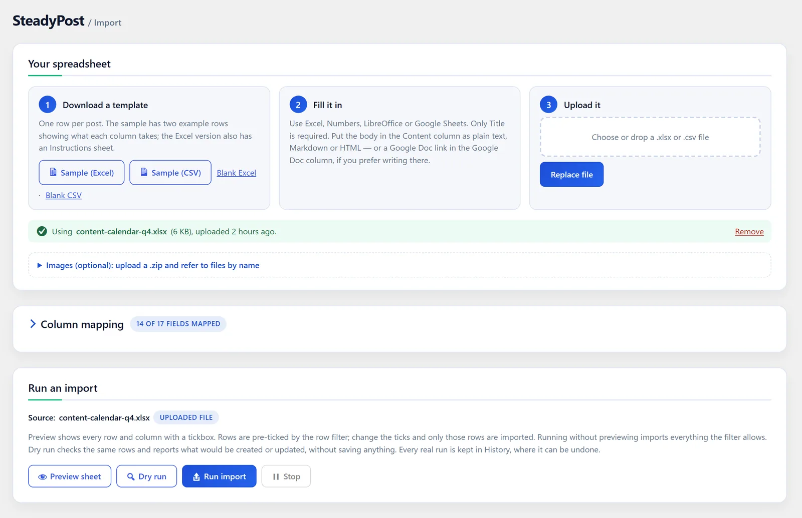
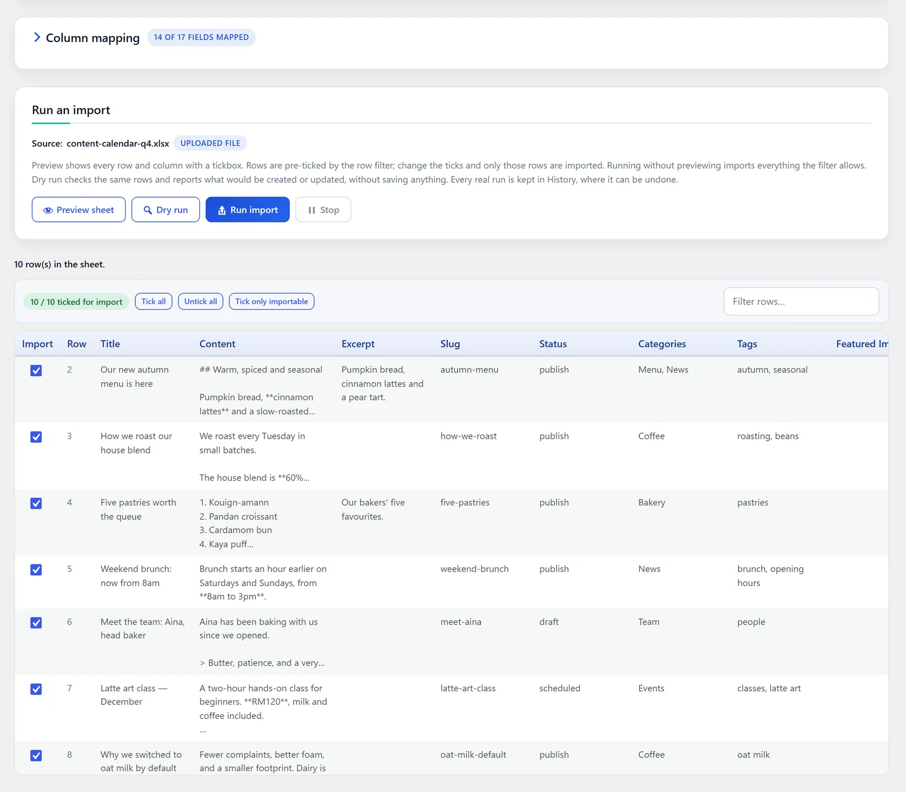
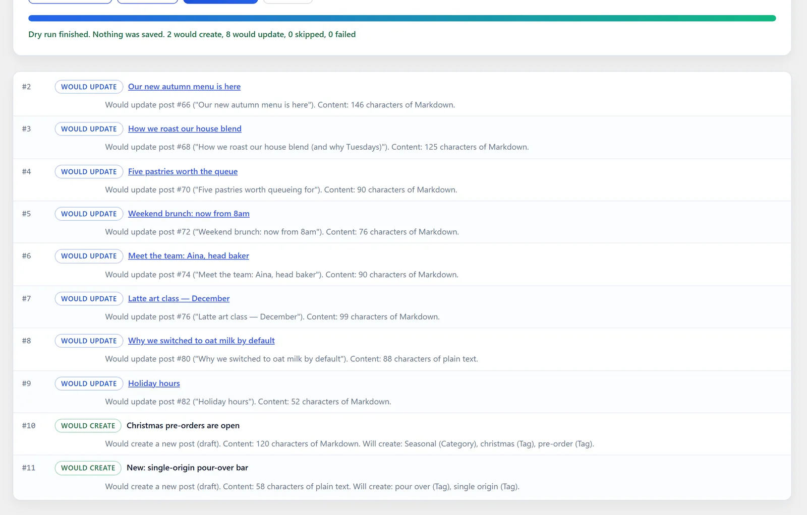
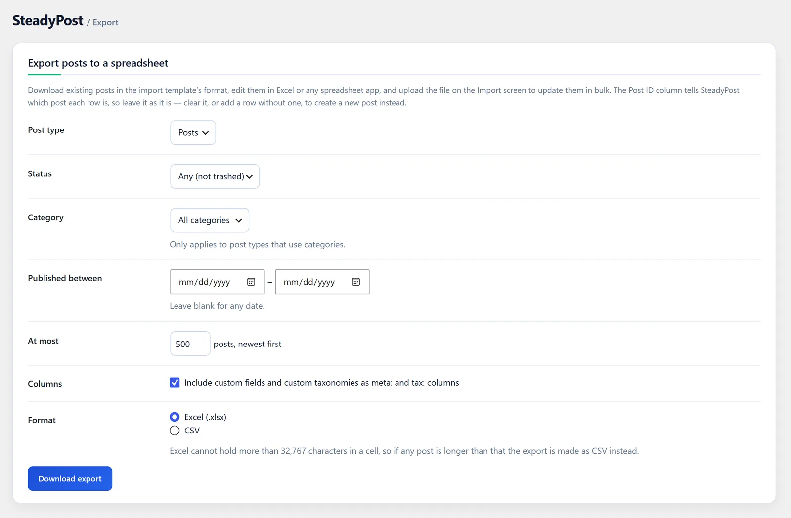

Excel & CSV, dengan betul
.xlsx dan .csv, termasuk keanehan fail sebenar: pengekodan Windows Excel, pemisah koma bertitik, tarikh bertaip dan sel berpautan.
SteadyPost · pemalam WordPress percuma
Rancang siaran dalam Excel, CSV atau Google Sheets. SteadyPost menukar setiap baris kepada siaran WordPress — kandungan, kategori, imej dan medan SEO — dan membolehkan anda menyemaknya, membuat asal dan menyuntingnya secara pukal kemudian.
Versi 1.3.0 · GPL, percuma selama-lamanya · WordPress 6.0+ · PHP 7.4+ · tiada akaun, tiada pendaftaran · cuba dengan hamparan contoh kami
2 akan dicipta · 8 akan dikemas kini
Kategori “Bermusim” akan dicipta. Sedia apabila anda sedia.
Cara ia berfungsi
Setiap langkah berlaku dalam papan pemuka WordPress anda. Ini tangkapan skrin sebenar pemalam tersebut.
01 · Templat
Muat turun hamparan kosong atau contoh, isi satu baris bagi setiap siaran, dan muat naik semula. Lajur dipadankan dengan sendirinya.

02 · Pratonton
Pratonton menunjukkan setiap baris dan lajur dengan kotak semak. Import kesemuanya, beberapa sahaja, atau hanya baris yang diluluskan oleh lajur "ready" anda.

03 · Larian percubaan
Larian percubaan menyemak setiap baris yang ditanda dan memberitahu anda dengan tepat apa yang akan dilakukan oleh import sebenar — dan tidak menyimpan apa-apa.

04 · Sejarah & buat asal
Setiap import disimpan bersama log penuhnya. Buat asal menghantar siaran yang dicipta oleh sesuatu larian ke Tong Sampah, dan mengembalikan siaran yang dikemas kininya tepat seperti asal.
05 · Suntingan pukal
Eksport siaran — sebarang jenis siaran, ditapis mengikut status, kategori atau tarikh — sunting sel yang anda perlukan, dan muat naik fail tersebut. Setiap baris mengemas kini siaran asalnya, termasuk siaran yang tidak pernah dicipta oleh SteadyPost.
Betulkan 200 tajuk SEO sekali duduk, kemudian muat naik sekali sahaja.

Apa yang ada di dalamnya
Dibina untuk mereka yang benar-benar menguruskan kandungan: pemasar, editor dan agensi yang membina laman mereka.
.xlsx dan .csv, termasuk keanehan fail sebenar: pengekodan Windows Excel, pemisah koma bertitik, tarikh bertaip dan sel berpautan.
Tulis kandungan mengikut cara anda; ia dikesan bagi setiap baris. Kandungan editor blok dikekalkan tepat seperti asal.
Muat naik fail zip berisi imej dan tulis hero.jpg dalam satu baris — atau guna semula imej yang sudah ada dalam pustaka media anda. Setiap imej ditambah sekali sahaja.
Jalankan helaian yang sama sekali lagi dan siaran yang telah diciptanya dikemas kini di tempat yang sama. Tiada yang berganda.
Dipisahkan dengan koma, dicipta jika belum ada. Sebarang taksonomi tersuai boleh digunakan melalui lajur tax:.
Meta siaran yang didaftarkan dan medan Advanced Custom Fields yang ringkas muncul sebagai lajur templat secara automatik.
Tajuk meta, penerangan dan kata kunci terus masuk ke Yoast SEO, Rank Math atau SEOPress — atau kunci meta yang anda namakan.
Tetapkan tarikh terbit dan status "scheduled". 9:00 bermaksud pukul sembilan pagi di zon waktu laman anda.
Lebih suka Google? Baca baris terus dari Sheet mengikut jadual, dan ambil kandungan siaran dari Google Doc, termasuk imejnya.
Serasi dengan
Tiada apa-apa yang perlu diganti. SteadyPost menulis siaran WordPress biasa, jadi tema, editor dan pemalam anda terus berfungsi seperti biasa.
Mulakan
Lebih besar daripada hamparan?
Hamparan sudah memadai untuk kebanyakan import. Jika anda meninggalkan CMS lama, pangkalan data lama atau laman yang tiada siapa berani usik, jurutera kami boleh merancang dan menjalankan pemindahan untuk anda — termasuk ubah hala, imej dan SEO.
Soalan lazim
.xlsx dan .csv. Excel, Apple Numbers, LibreOffice dan Google Sheets semuanya boleh menyimpan salah satu daripadanya. Fail Excel dibaca daripada helaian pertamanya. Fail CSV yang disimpan oleh Excel dalam pengekodan Windows, atau dengan koma bertitik sebagai pemisah, dikesan secara automatik.## Heading dan **bold**, atau HTML. SteadyPost mengesan yang mana satu bagi setiap baris. Atau letakkan pautan Google Doc dalam lajur Google Doc dan dokumen itu menjadi kandungan siaran.hero.jpg sebagai imej pilihan, atau  dalam kandungan. Nama fail yang tiada dalam zip akan dicari dalam pustaka media anda. Setiap imej ditambah sekali sahaja, walau berapa banyak baris yang menggunakannya.Muat turun SteadyPost, cuba dengan hamparan contoh kami, dan terbitkan kelompok siaran seterusnya dalam beberapa minit.
Beritahu kami apa yang anda import dan apa yang menghalang anda. Kami biasanya membalas dalam satu hari bekerja.